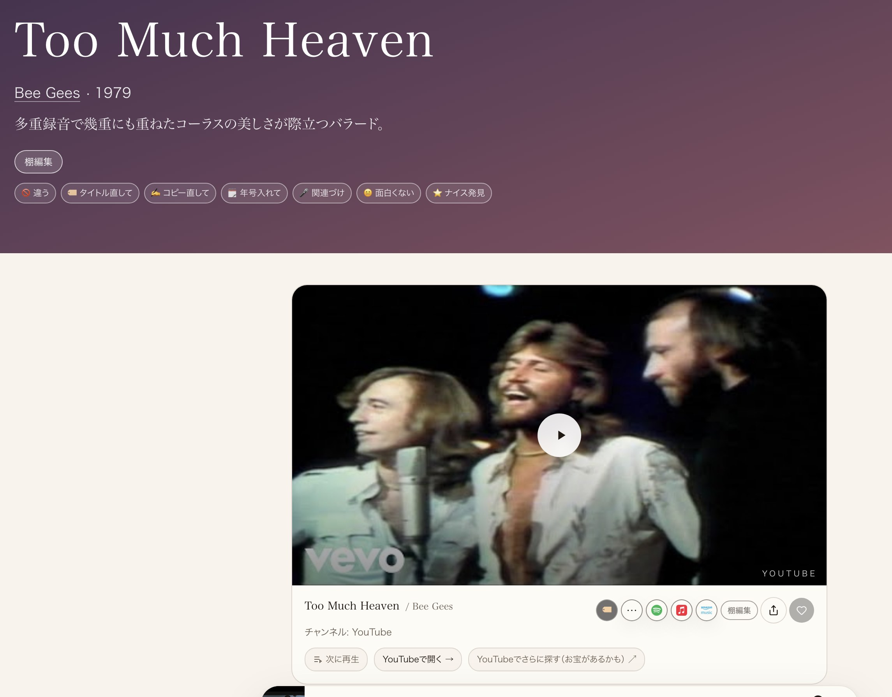

共有資料の一覧 ／ 確認ページ #717 公開リポジトリの1MB超ファイルを解消
#717 公開リポジトリの1MB超ファイルを解消
2026-09-12 実装・main合流・本番(GitHub Pages)反映まで実測確認
1MB超のファイルが330件（Eagleギャラリー237件＋確認ページの画像/動画93件）あった。原因3つを直した：①スマホ用Eagleギャラリーのサムネ/受け渡し画像を無劣化コピーしていた処理を圧縮方式へ修正、②公開直前に大きいファイルを弾くガードが一部の経路（個別セッションの直接commit）を素通りしていたのでgit pre-commit hookに一本化、③中継所のログ(relay.log)が46.8MBまで無制限に肥大していたのでトリムを追加。既存の330件も同じ画質のままその場で圧縮した。
② 数字
330件直す前（1MB超ファイル数）
2件直した後（残りは判断待ちの2件のみ）
907MB→約420MB該当ファイルの合計サイズ
0件新たに1MB超が増える経路（pre-commit hookで恒久ガード）
③ 実データでのスクリーンショット
直す前（1.8MB・確認ページ用スクショの一例）
直した後（116KB・見た目はそのまま）
④ 押せるリンク
⑤ 何をどう確かめたか
| 確認項目 | 結果 |
|---|
| 画質を保ったまま容量を落とせているか | 同じ画像を並べて目視。文字も判別できる範囲を維持 |
| 生きているURL（Eagleギャラリー・ポッドキャスト等）が壊れていないか | ファイル名/拡張子は変えず中身だけ圧縮。ポッドキャスト本編は対象外に |
| 1MB超が今後また増えないか | .git/hooks/pre-commitで機械的にブロックする仕組みを追加 |
| 残り2件（tweets_data.json・queue.json）はどうするか | 前者は過去の類似事故と同種のためたまごさんの判断待ち、後者は稼働中の生きた台帳のため今回は見送り |